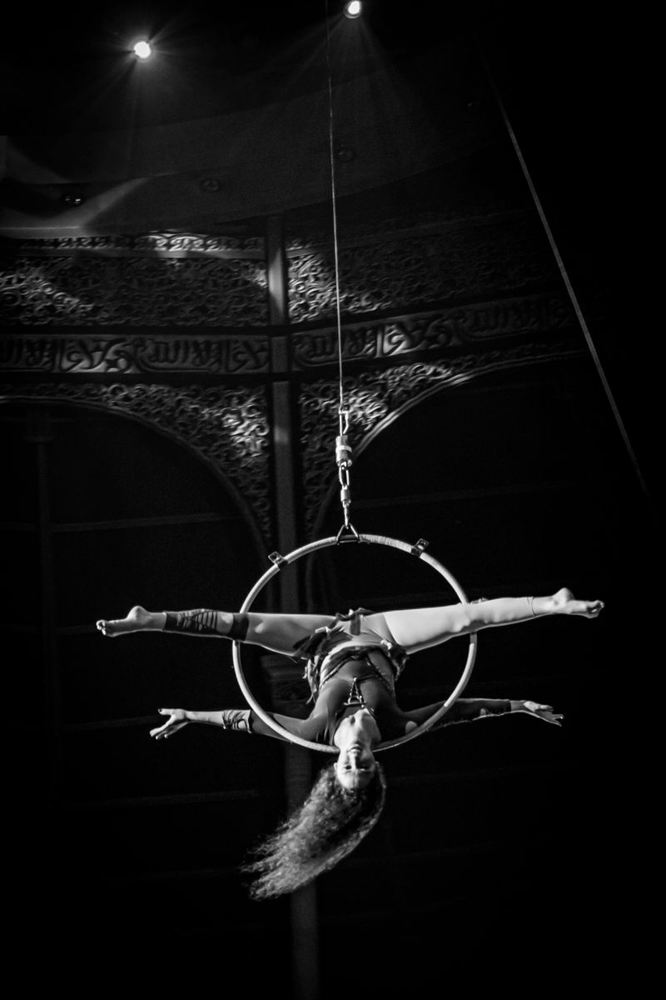
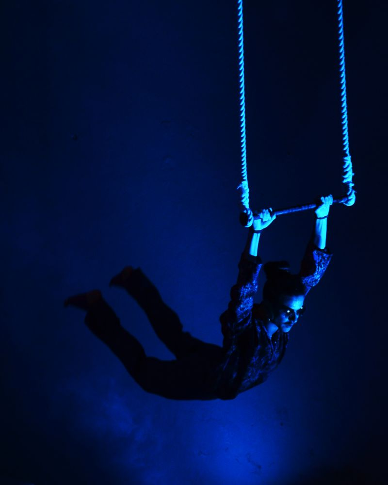

Aerial silks & circus arts studio
Strength,
suspended.
Learn aerial silks and circus arts with coaching that builds real strength — and the freedom to move in your own way.
01 — The studio
Where athletic discipline meets artistic freedom.
Aerial work asks for two things at once: the strength to hold yourself in the air, and the expression to make it mean something. Training here gives equal weight to both.

-
Technique before height
Classes build grip, conditioning and body awareness first, so every new skill rests on solid foundations.
-
Progress you can see
Clear levels from Beginner to Advanced, plus a student portal for booking classes and logging the skills you earn.
-
A stage to aim for
Showcase opportunities give students a reason to turn practice into performance.
02 — Disciplines
Choose your apparatus.
-
Aerial Silks
Climbs, wraps and drops on two lengths of fabric suspended from a single point.
Core discipline
-
Aerial Hoop
Strength, balance and shape-making in and around a suspended steel ring, also called lyra.
Availability to be confirmed

-
Trapeze
Holds, balances and swings on a bar hung from two ropes.
Availability to be confirmed



03 — Training
From first climb to first drop.
Every student follows the same path upward. Each level builds on the one before it, so you always know what you're working towards.


-
Level 1
Beginner
For first-timers. Build grip strength, basic climbs and foundational positions, working close to the floor.
-
Level 2
Intermediate
Link skills into sequences, add inversions from the air and begin working at height.
-
Level 3
Advanced
Dynamic drops, complex transitions and choreography ready for performance.
Safety on the rig
Questions about rigging, mats or what happens in your first class? Ask us before you book.
Ask about safety
04 — Performance
Train for the stage.
Performing is part of the journey. Showcases give students the chance to present their work to an audience — in costume, under lights.
On the night
- Costume
- Lights
- Audience
Ask us about upcoming opportunities to perform.
05 — Community
The people on the floor.
Behind every climb is a coach watching your form and a room of people learning to trust their own strength.
Strength is easier to find in good company.
Meet the instructors


Your first climb starts on the ground.
Start with a beginner class, or ask us anything before you book.